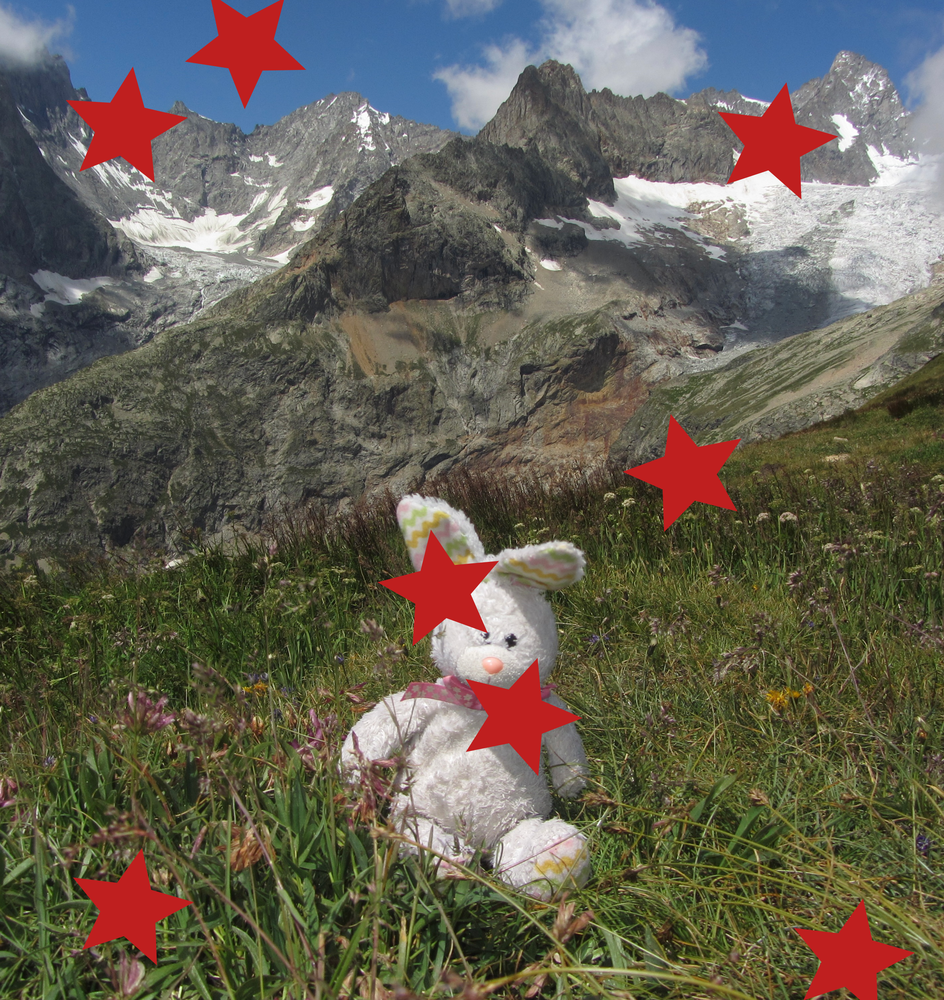
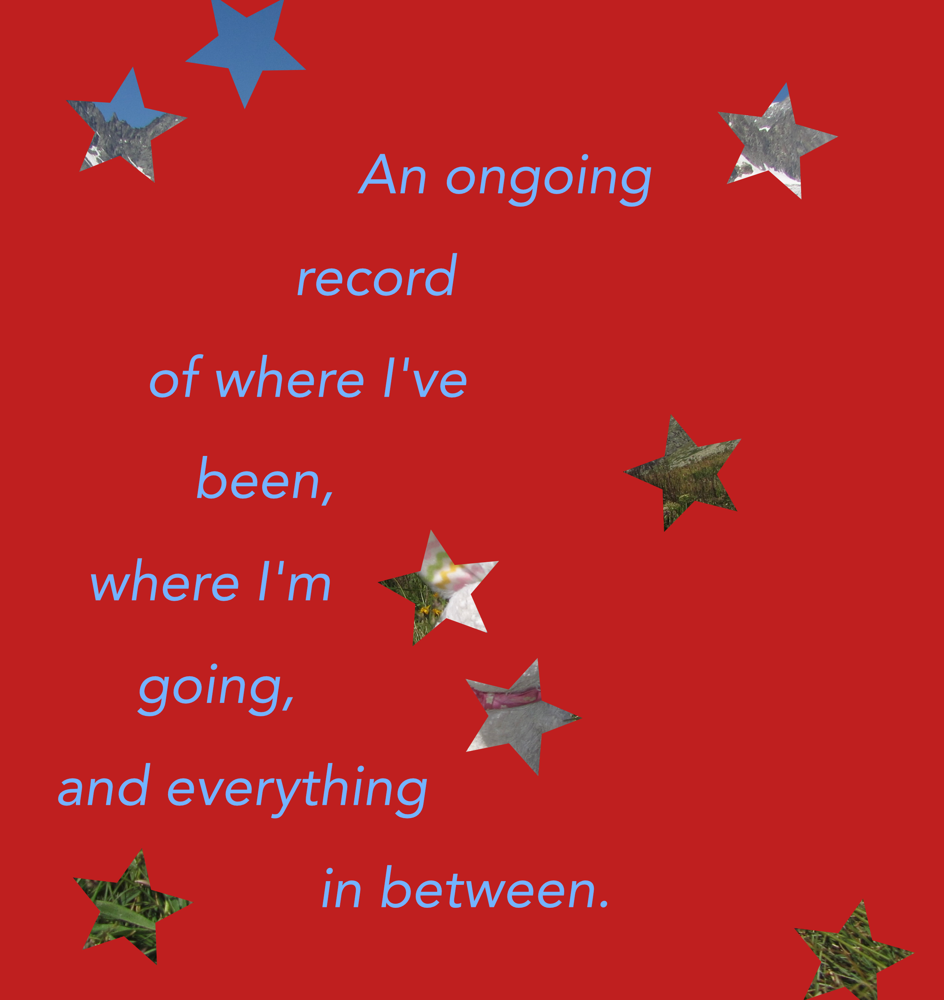
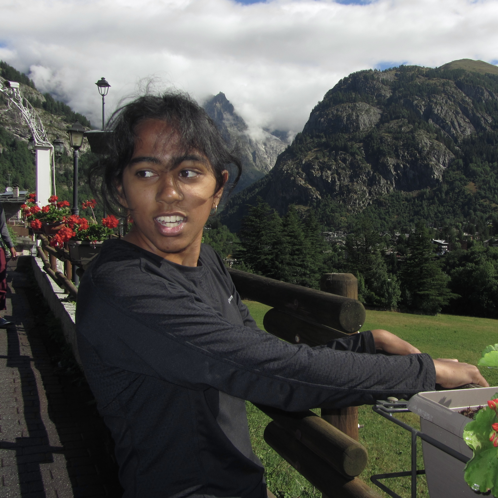
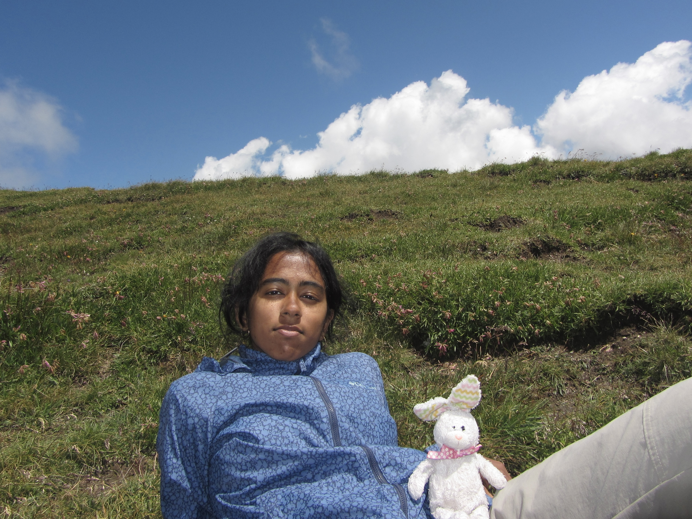
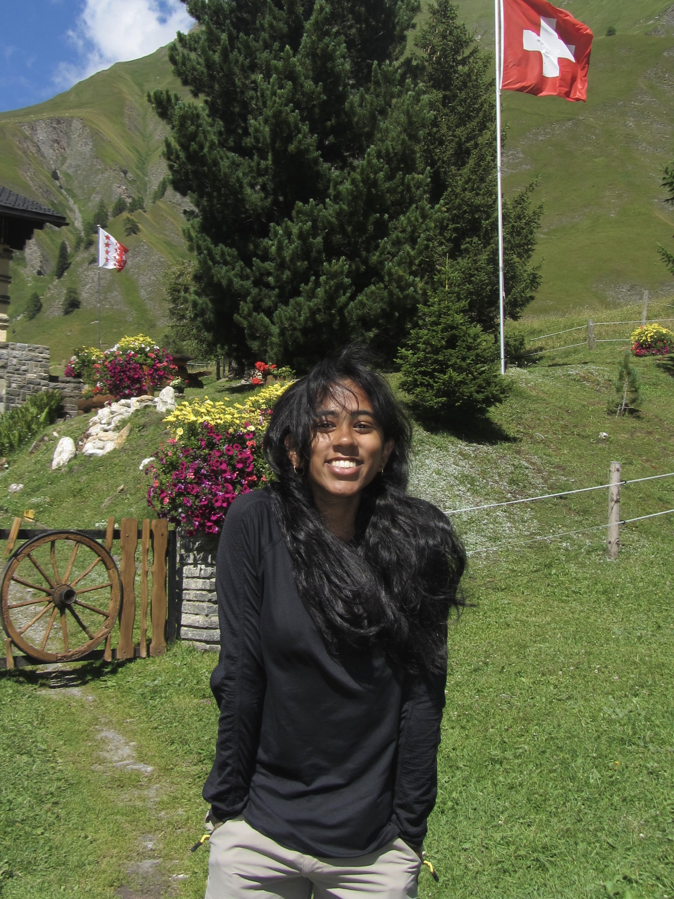

Hello there, I’m Varsha Punati. I am a passionate outdoorsman and mountaineer. My parents were crucial in instilling that love and curiosity for the outdoors, and thanks to them, I grew up fortunate enough to explore the world from a young age.
In 2019, I summited Mt. Kilimanjaro and thus began my mountain climbing journey. I have since trekked Everest Base Camp, Mont Blanc, climbed El Capitan, Half Dome, and Mt. Dana, as well as Mt. Whitney. I continue to search for peaks to climb and one day hope to scale the Seven Summits.
Through my mountain climbing I have gained many lifeskills including leadership, cooperation, and perseverance, which help me on the slopes but also in my professional life. I share a more in depth analysis of my experiences in my TEDx Talk.